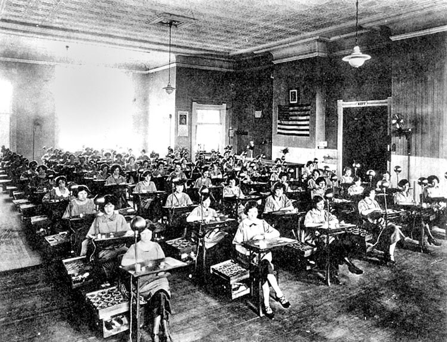
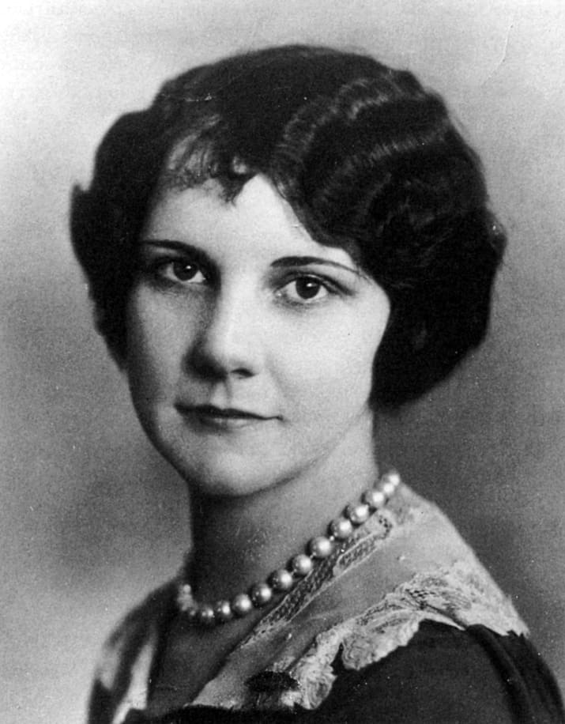

"Чтобы мир мог видеть лучи света, женщины из Оранжа, штат Нью-Джерси, нанялись в U.S. Radium. Каждый день они брали в руки циферблаты часов и красили слепые цифры волшебной краской, которая заставляла их светиться ночью. Краска была дорогой. Поэтому её нельзя было расходовать попусту. Когда в стакане оставалось несколько капель после того, как щетки крутили и наводили, контролёры жаловались. Девочек учили чистить кисти губами. Тринадцать из этих девушек сейчас умерли. На прошлой неделе корпорация U.S.Radium выступила ответчиком по иску на миллион с четвертью долларов, поданному неким Раймондом Берри, адвокатом, от имени ещё пяти женщин-сотрудниц корпорации, которые, по словам Берри и многих врачей, находятся при смерти. Для этих пяти нет света во тьме, кроме золотого блеска компенсации. Их болезнь неизлечима.",-так гласит статья в американском журнале Time за январь 1928 года о начале судебного процесса по иску пяти бывших работниц корпорации U.S. Radium.
Эти девушки (никому из них на тот момент не было и 30 лет) занимались нанесением на циферблаты часов светящихся в темноте краски, основным ингредиентом которой был радий, из-за чего все работницы получили тяжелое облучение.
Но чем же так опасен радий? Стоит начать с истории его открытия. Этот элемент был впервые получен в 1898 году Пьером и Марией Кюри в их лаборатории в австро-венгерском городе Иоахимсталь. 26 декабря 1898 года супруги Кюри сделали доклад во Французской академии наук, в котором объявили о теоретическом открытии этого элемента. Радий был выделен в результате распада Урана и оказалось что этот элемент намного радиоактивнее своего предшественника. Радий был очень дорогим. Для его получения требовалось очень трудоемкая и сложная технология, которую Маяковский примерно в те же годы описал как "грамм работы - год труда".
Конечно, он преувеличил масштабы, но все равно, для производства 1 грамма радия приходилось тратить вагоны урановой руды и тонны топлива. В первой половине XX века это был, пожалуй, самый дорогой химический элемент. В начале XX века радий пытались пристроить везде. Уже в начале века было понятно, что это перспективное направление для энергетики, потому что его распад выделял большое количество энергии. В 1900 году во Франции была выпущена серия открыток "Жизнь в 2000 году", где в Париже будущего топили радием. Газообразную версию радия - радон- использовали в медицине в виде радоновых ванн и радоновых ингаляторов. Предполагалось, что радиация способна оздоравливать организм, поэтому ее добавляли всюду: в лекарства, в питьевую воду, в краску для волос, даже в еду. К началу XX века радиация стала прогрессивной и популярной технологией, на которой многие хотели заработать.
События 1920-х годов на заводах U.S. Radium в Америке
Одной из таких компаний стала U.S.Radium, основанная в 1914 году двумя американскими физиками Альбертом фон Сохоки и Джорджем Уиллисом. Основной сферой работы компании было и остается до сих пор производство радия и другого радиационного сырья. В те годы завод в городе Оранж в штате Нью-Джерси производил в день полтонны радия из руды, которая добывалась на шахтах компании в штате Колорадо. Но U.S.Radium прославилась не этим. Её отличительным продуктом стала люминесцентная краска и изготавливаемая на ее основе разные светящиеся бытовые предметы. Явление радиолюминесценции было открыто в 1902 году, опять же за этим стоит лаборатория Кюри. В 1902 году американский изобретатель Уильям Хаммер - инженер из компании Эдисона и фанат радия, которой работал в лаборатории Пьера и Марии Кюри в Париже и увез оттуда кристаллы соли и радия,- заметил, что они светятся в темноте. После экспериментов выяснилось, что свечение вызывает излучаемая радиация и свет можно усилить. Краткая суть процесса в том, что в темноте ярко светится не сам радий, а его смесь с другим элементом, чаще всего металлом. Конкретно в U.S.Radium использовали цинк. А в 1917 году технологи компании додумались смешать радий-226 с сульфидом цинка и делать на этой основе светящуюся в темноте краску, которая вышла на рынок под маркой Undark. И это был прорыв, так как оказалось, что Undark идеально подходит, например, для наручных часов: цифры светились в темноте, что было весьма удобно для военных (после того, как США вступили в Первую мировую войну в 1917 году, одним из наиболее простых вариантов стала привязка атаки к определенному времени, поэтому любой офицер теперь должен был носить на руке часы причем желательно часы, на которые можно было бы смотреть и ночью, не подсвечивая их чтобы не стать мишенью снайпера). Помимо часов при помощи этой краски производили полный спектр светящихся в темноте товаров, вплоть до дорожных знаков и номеров домов, но именно часы стали визитной карточкой фабрики. После войны продажи U.S.Radium заметно упали, но к 1925-1926 годам они вернули свое первенство среди подобным себе компаний. Пока в компании все было хорошо, никто не обращал внимание на то, в каких условиях работал персонал завода светящихся часов. А условия были, мягко говоря, не самые лучшие. Фабрика работала с радиоактивными веществами, а единственным на тот момент годным для производства люминесценции веществом был радий-226, который очень сильно фонил (его радиоактивные свойства гораздо больше, чем у урана).

Не известно, насколько руководство компании U.S.Radium осознавало опасность облучения, но уже к 1920-м годам стало ясно, что радиация вредна для здоровья. Та же Мария Кюри сильно облучилась и с 1918 года болела радиационной анемией, от которой через 16 лет и умерла. А в 1928 году от облучения умер и сам Альберт фон Сохоки, один из сооснователей компании. Перед смертью у него почти не было зубов, сгнили и отвалились пальцы на руке. Но хожу всего приходилось низовому персоналу, так как об их безопасности никто не задумывался. Сотни девушек-художниц рисовали цифры на циферблатах по 10 часов в сутки за 5 центов за раскрашенный товар. В среднем за день работницы раскрашивали по 200 часов и получали неплохие деньги (с учетом инфляции сейчас они бы получали около 160 долларов в день). Для девушек это была первая работа, где они проводили от 2 до 5 лет, а потом кто-то уходил на другую работу, кто-то выходил замуж и заводил семью, а кто-то, как потом выяснится, умирал. Но художниц никто даже не думал как-то защищать от радиации, более того, труд был организован так, что им приходилось контактировать с радиоактивной краской непосредственно: они наносили светящийся состав на цифры обычными кисточками, а чтобы краска не размазывалась и рисунок был красивым и ровным менеджеры поощряли художниц облизывать кисточки, чтобы кончики оставались острыми. Многие девушки сами понимали, что что-то тут не то, но руководство завода уверяло их, что небольшие дозы радиации не вредны, а наоборот полезны для здоровья. Бывали случаи, когда за отказ облизывать кончик кисточки работниц увольняли. Так было с Мэй Кин в 1924 году, которая сказала менеджеру, что не будет облизывать кисточку, так как ей не нравится вкус краски, за что ее уволили на второй месяц работы в компании. По итогу это увольнение спасло ей жизнь: Мэй Кин прожила очень долгую жизнь и скончалась в 2014 году в возрасте 107 лет.
Девушки, которым менеджеры ежедневно говорили о полезных свойствах радиации, красили этой краской ногти, зубы, добавляли в тоники. Это было медленным самоубийством. В 1930-е годы в MIT у пострадавших девушек делали замеры радиации. Выяснилось, что художницы, облизывая кисточки, потребляли от нескольких сотен до нескольких тысяч мкКи (микрокюри). Для сравнения, максимальным безопасным излучением сейчас считается 0,1 мкКи. Более того, последующая медицинские исследования определили, что радий ведет себя в организме так же как кальций, заставляя его концентрироваться в зубах и костях, буквально разлагая челюсти. Такое заболевание в медицине даже стали называть радиевая челюсть, когда у человека выпадают зубы, и он мучается от боли, а потом челюсть буквально разлагается. Хотя на самом деле, конечно, при подобном страдала далеко не только челюсть. Разлагались буквально все кости, из-за чего пострадавших любое падение могло привести к перелому, а на поздних стадиях человек фактически терял способность ходить. Также могли отвалиться пальцы, как это было с фон Сохоки. Но шансы умереть от облучения у работниц были не стопроцентные, так как многие, особенно те, кто проработал там недолго, уцелели. Однако, если человек оставался на фабрике хотя бы год-два, то урон здоровью был уже непоправимым. В 1922 году умерла одна из работниц Фабрики в Оранже Молли Маги. Молли Маги долго и тяжело болела, ей даже пришлось удалить нижнюю челюсть. А через несколько месяцев после начала судебного процесса она умерла. Подкупленные U.S.Radium врачи из Нью-Джерси поставили ей диагноз сифилис, но Нью-Йоркский стоматолог Джозеф Кнэфф, который пытался лечить Молли, считал иначе. Он взял удаленную им же челюсть девушки и проанализировал ее с помощью стоматологической пленки (пленки, которая вставляется в рот человека и позволяет сделать рентген зуба). После проявления пленки на ней обнаружились разводы, которые говорили только об одном: из челюсти исходил зашкаливающий уровень радиации, тогда Кнэфф пропустил челюсть через электроскоп. Он показал то же самое. Выводы были очевидны: никакой это не сифилис, а последствия облучения. В 1923 году при неясных симптомах умер один из рабочих; потом еще в 1928 году, когда началось судебное разбирательство, было известно про 16 умерших от радиации сотрудников и более 50 облучившихся. На компанию даже подавали в суд, причем делалось это неоднократно. Но чаще всего пострадавшим, которые были из бедных семей, просто платили компенсацию. В 1927 году репортеры газеты Star Eagle обнаружили, что за прошлый 1926 год компания выплатила во внесудебном порядке 13 тысяч долларов семьям четырех погибших сотрудниц. А смерти списывались на различные болезни, чаще всего на сифилис или на отравление.
Когда пошли слухи о том, что на заводе творится что-то неправильное, директор U.S.Radium Артур Родер решил организовать показательную экскурсию по фабрике для специалистов по охране труда. Все отчеты и статьи об исследованиях условий работы должны были быть редактированы или засекречены, иначе опубликовавших ждал суд.
Борьба Грейс Фраер с U.S.Radium
В 1922 году к врачу обратилась 23-летняя Грейс Фраер. Она тоже начинала художницей в U.S.Radium. В 1918 году она пришла на фабрику под влиянием патриотической пропаганды, хотя была из обеспеченной семьи. В 1920 Грейс с фабрики ушла и более высокооплачиваемую и более престижную работу в банке. И вот теперь ее начали донимать боли в нижней челюсти, стали выпадать зубы. Врачи сделали Грейс рентген челюсти, который показал ужасную и странную картину: челюсти девушки выглядели как головка сыра и были покрыты мелкими дырочками. Грейс обследовали несколько врачей, но никто не мог понять, что с ней происходит. Только через три года, в 1925 году, один из дантистов обратил внимание на то, что в Оранже это был не первый случай, когда молодые девушки жаловались на проблемы с зубами. Расследование показало, что все больные ранее работали на U.S.Radium. Стоматолог высказал предположение, что болезнь как-то связана с условиями работы там. Дальнейшее исследование выяснило, что болезни челюстей начинались чаще всего у художниц, которые работали с краской Undark.Разумеется U.S.Radium такая постановка вопроса не понравилась. С их подачи в Оранж был приглашен Фредерик Флинт - токсиколог из колумбийского университета. Он обследовал Фраер и пришел к выводу, что она полностью здорова. Подтвердил диагноз и еще врач, по чистой случайности оказавшийся вице-президентом U.S.Radium. Таким образом, началась кампания по дискредитации Фраер и по убеждению населения в том, что завод к этому не имеет никакого отношения. Была проведена разъяснительная работа со многими врачами Нью-Джерси, особенно со стоматологами. Им сказали, что компания тут точно не причем: работа художника не могла привести к подобным результатам и нужно найти другое объяснение. Разумеется все это хорошо "подогревалось" деньгами. То есть компания пыталась пойти по уже отработанному пути: по-тихому замести дело, возможно, откупиться от семьи Фраер какой-то незначительной суммой и сделать так, чтобы о проблеме никто не узнал. Тогда репутации U.S.Radium ничего не угрожало бы. Казалось бы, куда какой-то работнице банка, бывшей художнице бороться против такой крупной компании, как U.S.Radium. У нее не было бы и шанса выиграть это дело, если бы она не родилась в семье политиков (political family (политическая семья) - это семья, в которой несколько членов вовлечены в политику, особенно в предвыборную). Ее папа был депутатом палаты представителей США, да и сама Грейс была весьма политически активной девушкой: боролась за права женщин, а на завод она пошла в 1917 году, как раз из патриотических побуждений, чтобы помочь армии, а не из-за денег (финансово ее семья была достаточно обеспеченной для того, чтобы выдержать долгие судебные тяжбы).

Семье Фраер удалось связаться с национальной лигой потребителей США (National Consumers League) - некоммерческой организацией, тесно связанной с демократической партией, которая ставила своей целью борьбу за более цивилизованную рыночную экономику. Лига потребителей не имела никакого отношения ни к рабочему движению, ни к профсоюзам. На тот момент ее составляли женщины из среднего и высшего класса, социально активные светские дамы и либеральных взглядов, для которых это было что-то вроде волонтерства. Лига занималась, в основном, тем, что писала запросы в государственные органы, привлекая внимание к условиям труда и качеству потребительских товаров и требуя установления четких стандартов. А поскольку в ее составе хватало жен конгрессменов, чиновников, губернаторов и прочих представителей истеблишмента, то, даже не будучи политической партией, лига была очень влиятельной силой. Лига потребителей сделала официальный запрос в департамент здравоохранения города Оранж с требованием расследовать смерти четырех рабочих на фабрике, в том числе смерть Молли Маги, а глава отделения лиги в штате Нью-Джерси - Кэтрин Уайле - через своих знакомых в Гарвардском университете смогла "вытащить на свет" доклад одного специалиста, что изучал условия работы на заводах U.S.Radium , где прямо указывалось на ужасные условия на фабрике. Так у истцов появилась доказательная база. Но даже со всем этим семье Фраер долго не удавалось найти адвоката, который бы защищал их интересы. Юристы Нью-Джерси просто не хотели связываться с одной из крупнейших корпораций штата. Только в 1927 году нашелся молодой адвокат из Ньюарка Раймонд Берри, который решил рискнуть, ведь победа в этом процессе могла стать для него очень выгодным для карьеры пунктом в портфолио. Адвокат Берри смог найти еще четырех пострадавших: Энду Хасмент, Кэтрин Шауб, Квинту Макдональд и Альбину Ларис. Они составляли коллективный иск к U.S.Radium, требуя по 250,000 долларов компенсации каждой, что на то время было огромными деньгами. Сначала именно эту пятерку и стали называть "радиевыми девушками".
Влияние СМИ на дело "радиевых девушек"
Вообще вокруг этого дела очень быстро поднялась шумиха. Желтая пресса жадно ухватилась за историю о том, как крупное химическое предприятие травит своих сотрудников. Свою роль в этой шумихе сыграли, так называемые в те годы в США, "разгребатели грязи" (своеобразных репортеров-детективов, занимающихся разоблачениями). В 1927-1928 гг. в крупнейших американских газетах истории радиевых девушек попадает на передовые статьи. Их заголовки были кричащими. Например, заголовок интервью с Грейс Фраер от New-York Evening Telegram 1927 года: "Женщина, ожидающая смерти, рассказала нам, как радиевый яд медленно и болезненно убивает ее". А так звучит заголовок статьи от New York Journal за 28 апреля того же года: "А вы бы умерли за науку? А некоторым приходится". А в 1930-е годы, во время второй волны судебных процессов, появился новый термин - живые мертвецы. Так будут называть пострадавших от радиации.
Общественность становилась на сторону девушек, жалея их. Руководство U.S.Radium пыталось повернуть дело в выгодную для них сторону. Фредерик Флин собрал свою пресс-конференцию, где заявил, что никакой связи между смертью Молли Маги и ее работой на фабрике нет, Грейс Фраер вообще уволилась в 1920 году (что было правдой) и она полностью здорова. Судебное рассмотрение иска началось в январе 1928 года. Руководство U.S.Radium через своих адвокатов всячески старались затянуть процесс. Их расчет был циничным: к тому времени всем уже было понятно, что девушки-истицы действительно облучались и радиация их медленно убивает. Пресса писала о том, что девушкам осталась жить всего около года. Это было некоторым преувеличением, конечно, но все равно, здоровье пятерых радиевых девушек быстро ухудшалась. Женщины оказались слишком больны, чтобы присутствовать на следующем слушании, которое состоялось в апреле. Несмотря на настойчивое возражение со стороны адвоката женщин, судья отложил рассмотрение дела до сентября, поскольку несколько свидетелей из США по делу радиации находились летом в Европе, следовательно были недоступны. Все понимали, что U.S.Radium просто тянет время, ожидая, что истицы скончаются быстрее, чем будет вынесен приговор.
Давление СМИ и общественности заставило суд перенести слушание на начало июня 1928 года, но в реальности до суда не дошло. Весной руководство U.S.Radium вышло на Раймонда Берри и предложила пойти на мировую и отозвать иск. В обмен предлагалось, что компания оплатит всем пострадавшим девушкам лечение и до конца жизни будет выплачивать им пенсию. Сначала Берри и девушки не соглашались, но потом поняли, что они не в том состоянии, чтобы что-то требовать. С каждым днем состоянии девушек ухудшалось и U.S.Radium могла бы выиграть дело, просто затягивая процесс.
Решение суда
В итоге, при участии окружного судьи Уильяма Кларка (по случайному совпадению тоже акционера U.S.Radium), было подписано мировое соглашение. Условия были следующие: каждая из девушек получала на руки 10 тысяч долларов (что эквивалентно примерно 158 тысячам долларов по нынешнему курсу), компания оплачивала девушкам лечение и компенсировала все судебные расходы, также все пять девушек получали ренту в 600 долларов в год. Раймонд Берри не был доволен соглашением: с его точки зрения суд выиграла корпорация, но в таком положении, когда время работало явно против девушек, он добился максимально возможного. Для U.S.Radium это действительно оказалось очень выгодная сделка, так как все пятеро радиевых девушек умерли в ближайшие 10 лет, так что сумма выплат оказалась гораздо меньше, чем те 250 тысяч долларов, что просили девушки изначально. И то, все 30-е годы U.S.Radium пытались через суд разорвать мировое соглашение. Но суд каждый раз не разрешал им это сделать (последняя апелляция была отклонена в 1939 году). На момент 1928 года врачебный консенсус был такой, что девушки не проживут и года, поэтому адвокаты так и торопились, но на деле девушки прожили дольше, дожив до второй половины 1930-х, из-за этого случались такие истории, как у Кэтрин Шауб. Вот что писал в 1930 году журнал Time о ее судьбе: "Живущая в Ньюарке Кэтрин Шауб, отреагировала на приближение смерти так же, как тот библейский житель Иерусалима, который, когда в 712 году до Рождества Христова город был в опасности, развеселился, ел мясо, пил вино и кричал: "Давайте есть и пить, поскольку завтра мы все умрем!". Мисс Шауб сняла в банке все свои $10000 и купила на эти деньги два автомобиля. Затем она поселилась в фешенебельном отеле в горах, где начала писать свои мемуары. Прошел год. Смерть так и не пришла к Кэтрин Шауб. А деньги закончились. После этого она взяла свои 600 долларов пенсии и перебралась в богадельню Вилла Святого Сердца в Калдвелле, Нью-Джерси. На прошлой неделе, идя по коридору, мисс Шауб споткнулась. Ее нога, разъеденная радием. сломалась. Сейчас она находится в Ортопедическом госпитале в Оранже. Доктора надеются, что ей удастся избежать ампутации"
С событиями в Оранже на фабриках Radium Dial в Иллинойсе и Waterbury Clock в Коннектикуте происходили аналогичные судебные процессы. А поскольку работницы там были представителями ирландской и польской диаспоры, то в дело вмешались еще и католическая церковь. Первая компания в процессе обанкротилась и ей пришлось "выбивать" компенсации из бывших акционеров до 1938 года, но ситуация закончилась также, как и в Оранже.
Как эта трагедия повлияла на дальнейшее отношение к радию, девушкам и рабочим
Можно сказать, что события в Оранже запустили лавину, которая вытащила на свет все ужасы работы на радиевых заводах, впервые заговорили массово об опасности облучения. В городе Оттава в штате Иллинойс, где располагался завод Radium Dial, радиевым девушкам поставлен памятник. В современных США они почитаются, причём не столько как жертвы эксплуатации, сколько как борцы за свои права. Разумеется, в последние годы в популярности этого эпизода играет роль и то, что большинство пострадавших были женщинами, судились с компанией тоже женщины.
Действие Грейс Фраер, её подруг и адвокатов действительно можно характеризовать, как пример правильного гражданского поведения. Дело радиевых девушек стало максимально медийным для США, оно было одним из ключевых событий 1928 года, и не только. Судебные тяжбы шли все тридцатые, пресса продолжала о них активно писать, то есть девушки не выпадали из инфополя до самого начала Второй Мировой войны. Причем журналисты четко расставили акценты: работницы - это жертвы, а фабриканты - однозначные злодеи. Флоренс Келли, президент Лиги потребителей, называла радиевые заводы не иначе, как хладнокровными убийцами, и в ближайшее время проверки прошли на всех подобных производствах. В июле 1928 года в национальной службе здоровье США прошла встреча с активистами Лиги и врачами, на которые впервые Американской истории на государственном уровне подняли проблему радиации. На встрече договорились, что будут созданы два государственных медицинских комитета, которые начнут серьезные изучения влияния радиации на человека. Как по этому поводу заявил представитель Национальной службы здоровья: "Привлекая внимание к наиболее ужасным проявлениям, мы сможем уменьшить проблемы, связанные с профилактикой подобных заболеваний в будущем. Мученичество немногих может спасти многих". И это действительно было так: пострадавшее работники радиевых заводов стали предметом пристального изучения ученых. После проведения на 27 бывших работницах U.S.Radium исследования в 1941 году в США был установлен максимально допустимый уровень радиации в 0,1 микрокюри, которым пользуются и сейчас.
В 2018 году на кинофестивале Tribeca Film Festival был показан драматический фильм Лидии Дин Пилчер и Джинни Молер "Радиевые девушки" с Джоуи Кингом и Эбби Куинн в главных ролях, но релиз был отложен из-зи пандемии COVID-19 и вышел в прокат только 23 октября 2020 года.